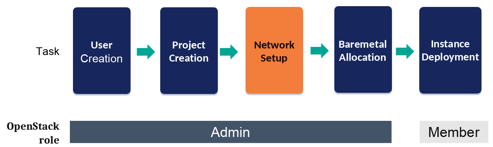
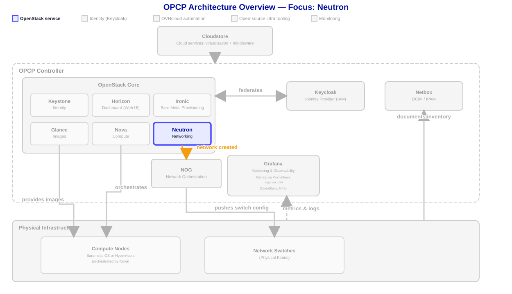
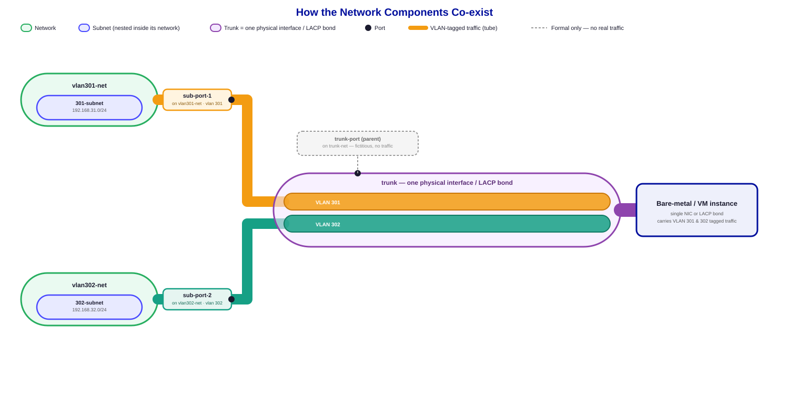

Networking

- In the previous lesson, you learned how to create users and clients to interact with OpenStack.
- In this lesson you will create networks and subnets with the OpenStack CLI to connect your instances to the outside world or to each other.
- OpenStack networking is handled by the Neutron service.

Objective
We will now go through the steps to configure the network on a baremetal node using the OpenStack CLI client.

Create a private network and subnet
Step 1: Create the private network
Before deploying your instance, it is generally necessary to create a private network so that it is accessible within your local infrastructure. If you already have a private network with a subnet on your project that you want to use, you can skip the creation step and directly list your networks to retrieve the name or ID of the network concerned.
openstack network create ${STUDENT_ID}-netBy default, a network is only visible to the project that created it (as well as administrators) and the segment ID is generated automatically.
If you want to create a network shared between all your projects, you can use the --share parameter.
(Admin role only) In addition, if you want to create the private network in a specific VLAN, you can specify it with the following parameters:
--provider-network-type vlan
--provider-physical-network physnet1 # Static value in OPCP
--provider-segment $VLAN_ID # Neutron segment-id
For example, if you want to create a shared private network in VLAN 2050 named ${STUDENT_ID}-net:
openstack network create --share --provider-network-type vlan --provider-physical-network physnet1 --provider-segment 2050 ${STUDENT_ID}-netExample output:
+---------------------------+--------------------------------------+
| Field | Value |
+---------------------------+--------------------------------------+
| admin_state_up | UP |
| availability_zone_hints | |
| availability_zones | |
| created_at | 2026-07-31T14:04:47Z |
| description | |
| dns_domain | None |
| id | 89174a66-72f2-482b-a6a7-6186c7f61364 |
| ipv4_address_scope | None |
| ipv6_address_scope | None |
| is_default | None |
| is_vlan_transparent | None |
| mtu | 1500 |
| name | jdoe-net |
| port_security_enabled | True |
| project_id | eedac8d5b9cf4a299072d2c0b53f7e03 |
| provider:network_type | vlan |
| provider:physical_network | physnet1 |
| provider:segmentation_id | 2050 |
| qos_policy_id | None |
| revision_number | 1 |
| router:external | Internal |
| segments | None |
| shared | True |
| status | ACTIVE |
| subnets | |
| tags | |
| tenant_id | eedac8d5b9cf4a299072d2c0b53f7e03 |
| updated_at | 2026-07-31T14:04:47Z |
+---------------------------+--------------------------------------+To share a network only with specific projects, you need to use OpenStack's Role-Based Access Control (RBAC) mechanism: Neutron RBAC Documentation.
openstack network rbac create \
--target-project <target_project_id> \
--action access_as_shared \
--type network \
<network_uuid>Replace <target_project_id> with the ID of the project you want to share the network with, and <network_uuid> with the ID of your network. access_as_shared is a fixed value.
Example output:
+-------------------+--------------------------------------+
| Field | Value |
+-------------------+--------------------------------------+
| action | access_as_shared |
| id | dde0c8dc-d35a-4408-98bf-be4149abd043 |
| object_id | 89174a66-72f2-482b-a6a7-6186c7f61364 |
| object_type | network |
| project_id | eedac8d5b9cf4a299072d2c0b53f7e03 |
| target_project_id | ab59a41615be4d73ad90e51957995976 |
+-------------------+--------------------------------------+Once the network is created, you can list it using the command:
openstack network list --name ${STUDENT_ID}-net
If needed, you can list all networks by removing the --name argument.
Step 2: Create the subnet
By default, the only element needed to create a subnet on your network is the CIDR you want to configure and the network you just created:
openstack subnet create --network ${STUDENT_ID}-net --subnet-range 192.168.120.0/24 ${STUDENT_ID}-subnetHowever, if you want to specify an allocation pool, you can do so with additional parameters. For example, to create a subnet with the CIDR 192.168.120.0/24 that allocates only 50 IP addresses from the CIDR and uses a specific gateway, you can use the following command:
openstack subnet create --network ${STUDENT_ID}-net --subnet-range 192.168.120.0/24 --allocation-pool start=192.168.120.11,end=192.168.120.60 --gateway 192.168.120.8 ${STUDENT_ID}-subnetThis subnet can then be used to deploy an instance, allowing OpenStack to assign an IP address to it during installation.
INFO: At this point, any instance can be deployed by giving the network name at creation: it will create a standard Neutron port and attach it to the given network. If you want to use multiple networks on a single port, follow the instructions in the Setup Neutron Trunk appendix.
Summary
- Neutron handles OpenStack networking
- Create networks with
openstack network create - Specify segment ID for network if needed
- Create subnets with
openstack subnet create
In the next step, we will deploy a server.